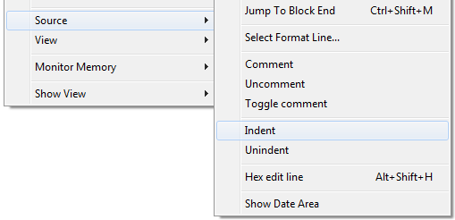
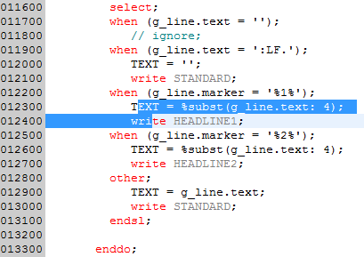
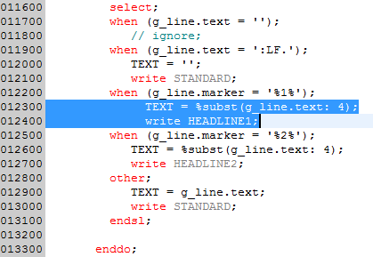

| Ctrl+Tab | Indent source line |
| Ctrl+Shift+Tab | Unindent source line |
You can also select the required function from the context menu:

The supported source types are:
The amount of spaces for indenting/unindenting a source line is retrieved from option Automatic indent, Blanks (1-20): of the ILE RPG IBM i Parsers preference page for older IDEs.
For newer IDEs, such as RDi 9.5, that value is retrieved from option Number of spaces to indent by, Blanks (1-20): of the ILE RPG Formatter page.
When option Set free form C-Specification cursor position is enabled (same preference page), the position specified there is used as a tabulator when indenting/unindenting source lines.

The result looks like that:

It is not required to select the complete source lines. Just start somewhere in the first line to change and span the selection to the last line. Then select the requested action.